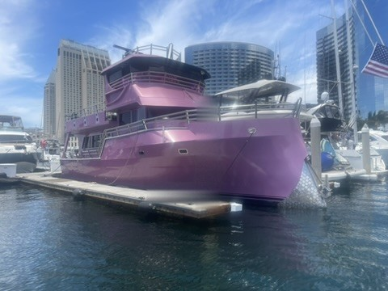
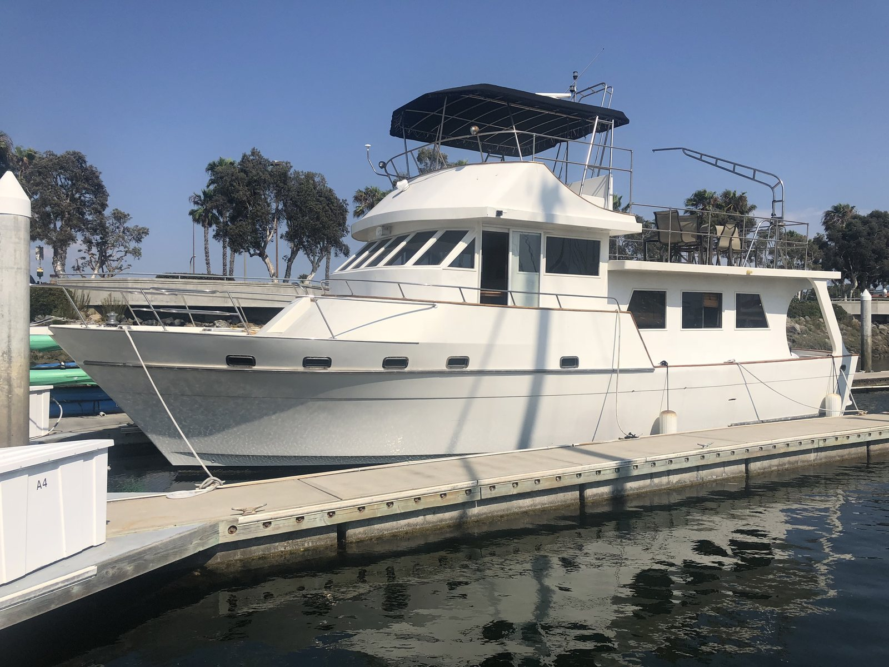
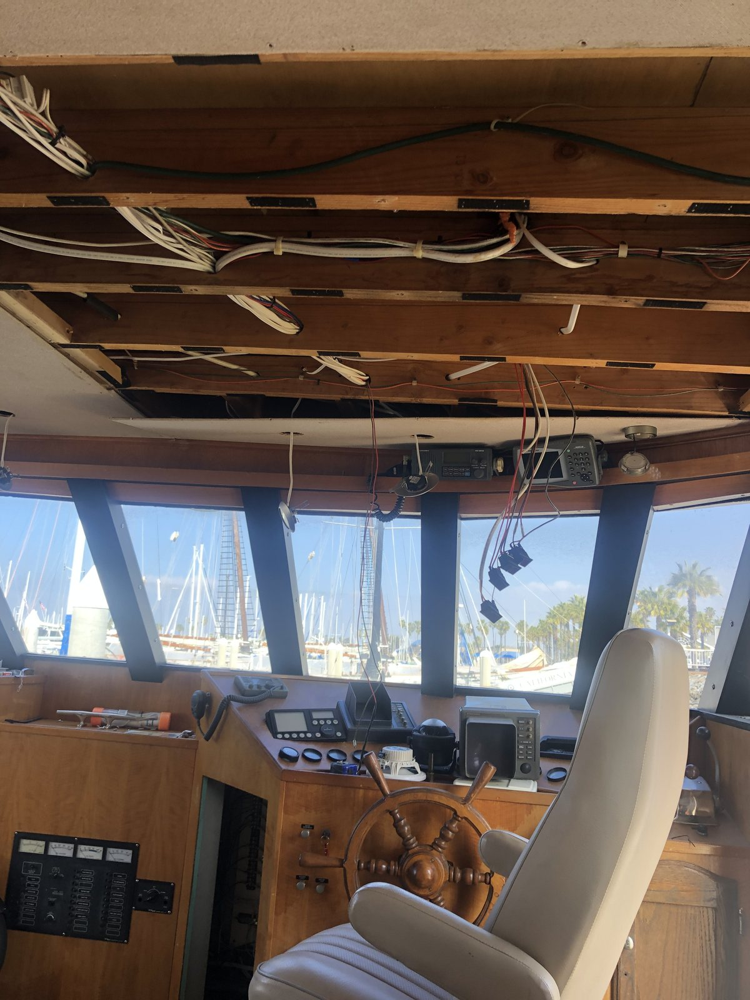
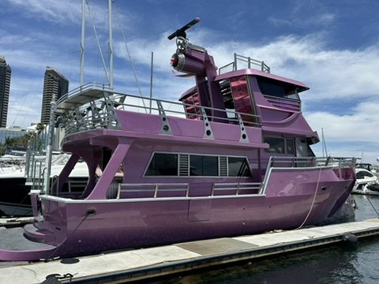

Scotty's crazy build
Pop Flamingo.
A tired white cruiser, taken down to the bones and rebuilt as a floating work of art. Same hands as the paintings, much bigger canvas.

Before and after
Same boat. Different attitude.
The build
From the dock to the spotlight.
-

Where she started
A plain white cruiser.
Solid bones, no personality. Exactly the kind of blank canvas Scotty likes.
-
Out of the water
Hauled out.
Up on the travel lift and onto dry land, where the real work begins.
-

Down to the bones
Opened up.
Ceilings down, wiring out. Everything gets looked at before anything gets painted.
-

The reveal
Pop Flamingo.
Pink from bow to stern, and impossible to miss in any marina.